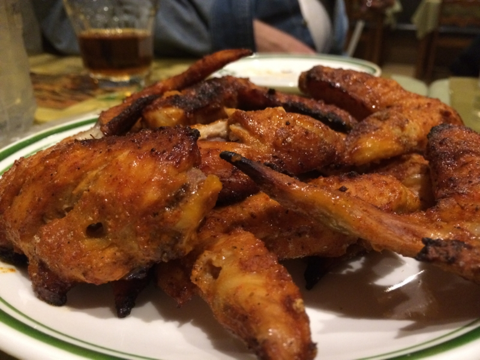

千葉県市川市 → 愛媛県松山市 に引っ越ししやがりました。
執筆日時：
2月20日に千葉県市川市から愛媛県松山市へ引っ越しました。市川には2年と3か月ぐらいいたのですが、まぁ、わりと悪くないところだった。なぜか近所のカレー屋さんを出禁になったりしたけど*1、大家さんはとてもいい人だったし*2、総武線（緩行・快速）と京成線のどちらにも乗れて交通の便もいい。小岩より堅苦しいところはあるけど、家族で住むのならこっちのほうが安心できるのだろうと思う。


しっかし、さすがに引っ越しは骨が折れた。
市川からもっていく自分の荷物派たいした量ではなかったのだけど、四街道からもっていく親父の荷物はてんこ盛りある。まぁ、ぜんぶ○リさんマークの引っ越し者がやってくれたから楽ちんだったけど。途中、どこからともなく野良猫がやってきて、さんざん引っ越し作業を妨害されるというハプニングはあったけど、なんとか予定していた通り19日の昼過ぎ、無事に荷物を送りだすことができた。心配していた雪も、まったく降らなかった。昔からこういうお天気運はいい。

その夜は、知り合いのパキスタンのひとのカレー屋さんでお別れパーティーをやった。ここのタンドリー手羽先はマジで絶品（もしかしたら裏メニューかもしれない）。これは松山でも売れると思う。